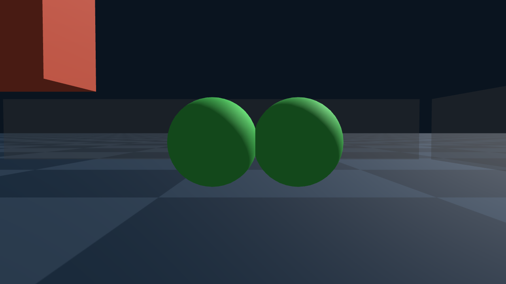
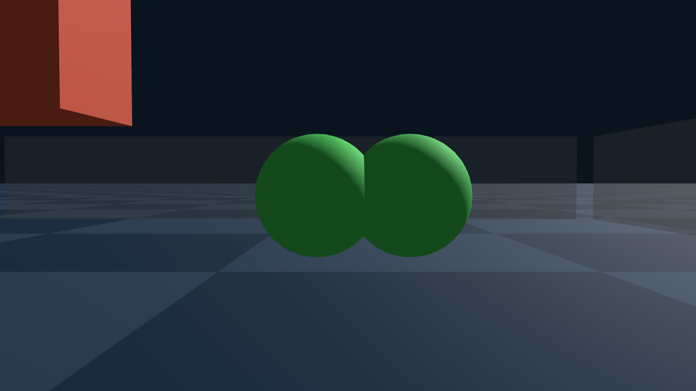

<title>Neural-IPC 周汇报</title>
<style>
:root {
  --bg: #fafaf8; --fg: #1f2328; --muted: #646b74; --border: #dcdfe3; --soft: #f1f3f5;
  --accent: #245f96; --good: #1f6b3a; --warn: #8a5a0b;
  --font: -apple-system, BlinkMacSystemFont, "Segoe UI", Roboto, "Helvetica Neue", Arial,
          "PingFang SC", "Hiragino Sans GB", "Noto Sans CJK SC", "Microsoft YaHei", sans-serif;
  color-scheme: light;
}
@media (prefers-color-scheme: dark) {
  :root:not([data-theme="light"]) {
    --bg: #16191d; --fg: #e4e7eb; --muted: #9ba3ad; --border: #353b43; --soft: #20252b;
    --accent: #80b4e6; --good: #8fd3a5; --warn: #e6c27a;
    color-scheme: dark;
  }
}
:root[data-theme="dark"] {
  --bg: #16191d; --fg: #e4e7eb; --muted: #9ba3ad; --border: #353b43; --soft: #20252b;
  --accent: #80b4e6; --good: #8fd3a5; --warn: #e6c27a;
  color-scheme: dark;
}
* { box-sizing: border-box; }
html, body { overflow-x: hidden; }
body { margin: 0; background: var(--bg); color: var(--fg); font-family: var(--font);
       font-size: 15px; line-height: 1.65; }
.wrap { max-width: 1200px; margin: 0 auto; padding: 0 16px; }
a { color: var(--accent); text-decoration: none; }
a:hover { text-decoration: underline; }
header.top { padding: 28px 0 8px; }
h1 { font-size: 1.55rem; margin: 0 0 8px; font-weight: 650; letter-spacing: 0.01em; }
.summary { margin: 8px 0 0; max-width: 72ch; }
nav.toc { display: flex; flex-wrap: wrap; gap: 4px 18px; font-size: 0.9rem; margin: 14px 0 0;
          padding-bottom: 12px; border-bottom: 1px solid var(--border); }
h2 { font-size: 1.2rem; margin: 36px 0 10px; font-weight: 650; }
h3 { font-size: 1rem; margin: 22px 0 4px; font-weight: 600; }
h3.sub { font-size: 1.08rem; margin-top: 40px; padding-top: 14px; border-top: 1px solid var(--border); }
h4 { font-size: 0.95rem; margin: 18px 0 4px; font-weight: 600; }
pre.log { font-family: ui-monospace, SFMono-Regular, Menlo, Consolas, monospace; font-size: 0.76rem;
          line-height: 1.45; background: var(--soft); border-radius: 4px; padding: 10px 12px; margin: 6px 0;
          max-width: 100%; white-space: pre-wrap; overflow-wrap: anywhere; }
details.repro { margin: 10px 0 26px; }
details.repro summary { cursor: pointer; color: var(--accent); font-size: 0.9rem; }
p.concl { max-width: 80ch; font-size: 1.05rem; color: var(--good); }
p.expect { max-width: 80ch; font-size: 1.08rem; color: var(--accent); }
p.setting { font-size: 0.8rem; color: var(--fg); }
section { scroll-margin-top: 12px; }
p { margin: 6px 0; }
.muted { color: var(--muted); }
code { font-size: 0.95em; word-break: break-all; }
.small { font-size: 0.86rem; }
.grid { display: grid; grid-template-columns: repeat(auto-fill, minmax(min(100%, 300px), 1fr));
        gap: 22px 18px; }
.demo { min-width: 0; }
.demo h3 { margin: 0 0 6px; font-size: 0.95rem; }
.demo h3 .key { color: var(--muted); font-weight: 400; font-size: 0.8rem; }
.demo p { font-size: 0.86rem; color: var(--muted); margin-top: 6px; }
video, img { display: block; width: 100%; height: auto; border-radius: 4px; background: var(--soft); }
img.plot { margin-top: 8px; }
.novideo { padding: 22px 12px; background: var(--soft); color: var(--muted); border-radius: 4px;
           font-size: 0.86rem; }
.tablewrap { max-width: 100%; margin: 6px 0 4px; }
table { border-collapse: collapse; font-size: 0.88rem; width: 100%; table-layout: auto; }
th, td { text-align: left; padding: 5px 14px 5px 0; border-bottom: 1px solid var(--border);
         white-space: normal; overflow-wrap: anywhere; vertical-align: top; }
th { font-weight: 600; color: var(--muted); font-size: 0.82rem; border-bottom-color: var(--fg); }
td { font-variant-numeric: tabular-nums; }
td.good { color: var(--good); }
td.warn { color: var(--warn); }
ul.obs { max-width: 90ch; font-size: 1.02rem; font-weight: 600; margin: 8px 0; padding-left: 22px; } ul.obs li { margin: 3px 0; }
main.wrap { counter-reset: sec; } main.wrap section > h2 { counter-increment: sec; counter-reset: sub; } main.wrap section > h2::before { content: counter(sec) ". "; } main.wrap section > h3 { counter-increment: sub; } main.wrap section > h3::before { content: counter(sec) "." counter(sub) " "; }
img.initframe { display: block; max-width: 640px; width: 100%; margin: 6px 0; }
mjx-container { max-width: 100%; } mjx-container svg { max-width: 100%; height: auto; }
ul.findings { padding-left: 20px; max-width: 80ch; }
ul.findings li { margin: 8px 0; }
.next { max-width: 80ch; }
footer.foot { color: var(--muted); font-size: 0.8rem; border-top: 1px solid var(--border);
              margin-top: 40px; padding: 12px 16px 28px; }
@media (max-width: 480px) {
  body { font-size: 14px; }
  th, td { padding-right: 10px; }
}
</style>
<script>window.MathJax = {tex: {inlineMath: [["\\(", "\\)"]], displayMath: [["\\[", "\\]"]]}, svg: {fontCache: "global"}};</script>
<script src="https://cdn.jsdelivr.net/npm/mathjax@3.2.2/es5/tex-svg.js" async></script>
<main class="wrap">
<header class="top"><h1>Neural-IPC 周汇报</h1><p class="summary">这周在服务器上跑通了 Genesis + lib IPC（Genesis 的 IPC 接触底层由 libuipc 计算）：5 个 Genesis IPC 例子和 4 个 Genesis 官方 IPC 测试场景，共 9 段视频（官方测试 4 个跑完，其中官方断言通过 2 个）。然后做了「一堆物体扔进盒子」（官方 ipc_objects_falling 场景加一个盒子），对 8 个 IPC 参数做了单变量扫描，共 26 个配置。主要发现：初始穿插会被拒绝开跑；表面全程没有穿透；\(\hat d\) 越小越难解，且不能大于软体表面网格的边长；Genesis 默认 κ 1e9 会被 libuipc 夹到区间上界；官方软球 E = 1 kPa 太软，会被压塌，所以主结果用 E = 1e5。</p><nav class="toc"><a href="#videos">Demo 视频</a><a href="#tests">官方测试场景</a><a href="#sweep">盒子实验与参数扫描</a><a href="#data">对生成数据的意义</a></nav></header>
<section id="videos"><h2>Demo 视频（Genesis + lib IPC）</h2>
<p class="muted small">Genesis 官方 IPC 例子一字未改，相机用官方代码里给的 viewer 位置；物理由 Genesis 底层的 libuipc 在 GPU 上算，画面在服务器上离屏渲染（CPU 软件渲染）。</p>
<div class="grid">
<div class="demo"><h3>布料 + 刚体 + 软球落地（官方例子）</h3><video controls muted playsinline preload="metadata" src="assets/videos/genesis_ipc_objects_falling.mp4"></video><p>Genesis 官方 examples/ipc/ipc_objects_falling.py，原样；相机 = 官方 viewer 位置。</p></div>
<div class="demo"><h3>动量守恒检验（官方例子）</h3><video controls muted playsinline preload="metadata" src="assets/videos/genesis_ipc_momentum.mp4"></video><p>官方 ipc_momentum.py：零重力下刚体撞 FEM 球，末步相对动量误差 1.06%。</p></div>
<div class="demo"><h3>机械臂抓软方块（官方例子）</h3><video controls muted playsinline preload="metadata" src="assets/videos/genesis_ipc_robot_grasp_cube.mp4"></video><p>官方 ipc_robot_grasp_cube.py：two-way 耦合；Genesis 的刚体在 libuipc 里是 κ = 100 MPa 的 ABD。</p></div>
<div class="demo"><h3>一堆物体扔进盒子（官方场景 + 我们加的盒子）</h3><video controls muted playsinline preload="metadata" src="assets/videos/genesis_ipc_objects_in_box.mp4"></video><p>Genesis 没有「扔进盒子」的官方例子：这是官方 ipc_objects_falling 场景原样，外加一个开口盒子和更多同款物体。参数扫描见下方。</p></div>
<div class="demo"><h3>机械臂遥控抓起一块布（官方例子，用户本地键盘操作录屏）</h3><video controls muted playsinline preload="metadata" src="assets/videos/user_local_ipc_robot_cloth_teleop.mp4"></video><p>用户在自己的 Windows 笔记本上运行官方 ipc_robot_cloth_teleop.py（Genesis 1.4.2，带窗口），用键盘遥控录屏，抓起了一块布（用户告知；这次运行在服务器上没有数据，以视频为准）。按键以代码为准：方向键水平移动，j / k 下 / 上，空格按住才合夹子；官方文件开头的按键说明与代码不一致。</p></div>
</div></section>
<section id="tests"><h2>官方测试场景</h2>
<p class="muted small">Genesis 仓库自带的 IPC 测试（tests/ipc/），场景和断言一字未改，用 pytest 原样运行；每个测试自己写好了 viewer 相机位置，录像就用它。卡片里写的是官方断言有没有通过。</p>
<div class="grid">
<div class="demo"><h3>离地间隙随接触刚度变（官方测试）</h3><video controls muted playsinline preload="metadata" src="assets/videos/genesis_test_test_ground_clearance_0.mp4"></video><p>5 个方块落地，contact_resistance 从 1e2 到 1e6；官方断言：不横向漂移、会停住、刚度越大离地间隙越大（test_rigid.py 257-264 行）。 官方断言：未通过。期待：接触刚度越大，方块离地越高。实测 5 个方块离地 6.39 / 6.39 / 6.39 / 7.00 / 8.18 mm，前 3 个一样，所以没过。原因：libuipc 会把接触刚度夹进按场景算出的区间，前 3 个方块的刚度低于下限，被夹成同一个值（同下方「接触刚度 κ」实验）。</p></div>
<div class="demo"><h3>斜向重力下的地面滑动（官方测试）</h3><video controls muted playsinline preload="metadata" src="assets/videos/genesis_test_test_ground_sliding_0.mp4"></video><p>重力带水平分量，5 个方块摩擦系数 0–0.16；官方断言：不穿地、离地高度与摩擦无关、摩擦越小滑得越远（test_rigid.py 316-329 行）。 官方断言：未通过。期待：离地高度与摩擦无关。实测 μ = 0.04 的方块比其他的高 9.3 mm：它从第 66 步起往前翻，最后倾斜 16°。原因：libuipc 默认的半隐式提前终止让 Newton 没算到收敛就停，误差积累成翻倒；只关掉它，最大倾角 0.24°，断言通过（把步长减半也能通过，0.31°）。</p></div>
<div class="demo"><h3>布料盖在物体上（官方测试）</h3><video controls muted playsinline preload="metadata" src="assets/videos/genesis_test_test_objects_colliding_0.mp4"></video><p>物体和布料落地；官方断言：全部落到地面且不穿地、没有飞走、最终静止、布料盖在所有物体上面（test_rigid.py 540-555 行）。 官方断言：通过。蓝色的是布料。官方相机几乎平视，所以看起来像一块板；实测布料开始是平的，最后高低差 127 mm：中间被方块和球顶起、四周垂下，确实是软布。</p></div>
<div class="demo"><h3>夹住布料一角拖动（官方测试）</h3><video controls muted playsinline preload="metadata" src="assets/videos/genesis_test_test_cloth_corner_drag_0.mp4"></video><p>两个方块夹住布料一角，先静置再拖着画一圈；官方断言：布料没掉、被夹的角始终跟着夹子走（test_deformable.py 253-271 行）。 官方断言：通过。</p></div>
</div></section>
<section id="sweep"><h2>盒子实验与 IPC 参数扫描</h2>
<p>Genesis 没有「一堆物体扔进盒子」的官方例子，这里用官方 ipc_objects_falling 场景加一个盒子和更多同款物体。这一套：所有软球 E = 1e5 Pa（官方 1e3 太软，在盒子里会被压塌）。所有实验每次只改一个参数。盒子墙画成半透明，盒内物体不透明。除了一开始就穿插的两档（开跑前被拒），所有档位 libuipc 的穿透检查都没有报穿透。</p>
<h3>IPC 的接触能量与 κ 区间（下面各实验都用）</h3><p class="expect"><b>原版 IPC 论文：</b>每一对距离小于 \(\hat d\) 的接触（点–三角形、边–边）加一项 barrier 能量，距离越近能量越大，距离为 0 时无穷大——这堵「无穷高的墙」保证永远穿不过去：\[ b(d)=\begin{cases}-(d-\hat d)^2\ln\dfrac{d}{\hat d}, & 0&lt;d&lt;\hat d\\[2pt] 0, & d\ge\hat d\end{cases}\qquad E_{\text{contact}}=\kappa\sum_{k\in C} b(d_k) \]</p><p class="expect"><b>libuipc 实际用的：</b>换成按距离平方 \(D=d^2\) 写的 log² 形式（同样 \(D\to0\) 时无穷大、\(D\ge\hat d^{2}\) 时为 0），并且整个能量乘了 \(\Delta t^2\)：\[ B(D)=\kappa\,\Delta t^{2}\,(D-\hat d^{2})^{2}\Big[\ln\frac{D}{\hat d^{2}}\Big]^{2},\qquad 0&lt;D&lt;\hat d^{2} \]</p><p class="expect"><b>Genesis：</b>自己不算 barrier。它把每个物体的 contact_resistance 当作 κ，两个物体之间取调和平均\(\kappa_{ij}=\dfrac{2\,r_i r_j}{r_i+r_j}\)，交给 libuipc；libuipc 再把它夹进按场景算出的区间：\[ \kappa_{\min}\approx\frac{10^{11}\,s\,L^{2}\,\bar m}{4\,\hat d^{4}\,\Delta t^{2}},\qquad \kappa_{\max}=100\,\kappa_{\min} \]直观上：每个顶点的惯性刚度是 \(\bar m/\Delta t^{2}\)，barrier 必须比它硬才能在一步内挡住物体，所以 \(\bar m\) 越大 → κ 越大，\(\Delta t\)、\(\hat d\) 越小 → κ 急剧变大。</p><div class="tablewrap"><table><tr><th>符号</th><th>含义</th><th>本场景（官方默认）</th></tr><tr><td>\(d\)</td><td>一对接触图元（点–三角形 / 边–边）之间的距离</td><td>—</td></tr><tr><td>\(D=d^2\)</td><td>距离的平方（libuipc 用它算 barrier）</td><td>—</td></tr><tr><td>\(\hat d\)</td><td>barrier 开始起作用的距离</td><td>10 mm</td></tr><tr><td>\(\kappa\)</td><td>barrier 的刚度</td><td>设 1e9 Pa，实际被夹到 1.57e7 Pa</td></tr><tr><td>\(C\)，\(k\)</td><td>所有距离小于 \(\hat d\) 的接触对，\(k\) 是其中一对</td><td>—</td></tr><tr><td>\(b(d)\)，\(B(D)\)</td><td>一对接触的 barrier 能量（论文 / libuipc）</td><td>—</td></tr><tr><td>\(\Delta t\)</td><td>时间步长</td><td>0.02 s</td></tr><tr><td>\(r_i\)</td><td>物体 \(i\) 的 contact_resistance</td><td>1e9 Pa</td></tr><tr><td>\(s\)</td><td>libuipc 的缩放系数 kappa_eval_scale</td><td>1e-16</td></tr><tr><td>\(L\)</td><td>整个场景包围盒的对角线长度</td><td>3.69 m</td></tr><tr><td>\(\bar m\)</td><td>全场景所有顶点的平均质量</td><td>0.0184 kg</td></tr><tr><td>\(\kappa_{\min}\)，\(\kappa_{\max}\)</td><td>libuipc 允许的 κ 下限 / 上限</td><td>1.57e5 / 1.57e7 Pa</td></tr></table></div>
<h3>官方参数：一堆物体扔进盒子</h3>
<p class="expect"><b>按原理期待：</b>物体落下、互相碰撞后堆在盒子里。IPC 的 barrier 让任意两个表面之间始终留着一点小于 \(\hat d\) 的间隙，所以全程不该有穿透。</p>

<p class="setting">对照档：下面各节要扫的参数在这里都取官方本例的值和 Genesis 默认（软球 E 是否改过见下一句）。（dt = 0.02 s、\(\hat d\) = 1 cm、κ = 1e9 Pa、μ = 0.1、软球用官方 Sphere 网格、软球 E = 1e5 Pa（官方是 1e3））。看：停住时每一对接触面（球–地、球–布、布–方块……）之间的最短距离，每帧 Newton 迭代几次（好不好解）。</p>
<div class="grid"><div class="demo"><h3>官方默认参数</h3><video controls muted playsinline preload="metadata" src="assets/videos/box_stiffball_baseline_default.mp4"></video><p></p></div></div>
<div class="tablewrap"><table><thead><tr><th>配置</th><th>软球–布 间隙（mm）</th><th>软球–地面 间隙（mm）</th><th>方块–布 间隙（mm）</th><th>方块–地面 间隙（mm）</th><th>布–地面 间隙（mm）</th><th>Newton 次数（中位 / 最多）</th></tr></thead><tbody><tr><td>官方默认参数</td><td>9.85</td><td>8.47–8.63</td><td>9.64</td><td>7.32–7.87</td><td>9.73</td><td>6 / 7</td></tr></tbody></table></div>
<ul class="obs"><li>每一对接触面停住时 → 间隙 0.73–0.99 倍 \(\hat d\)，不贴死</li><li>接触越重 → 间隙越小（方块–地面 0.8 倍 \(\hat d\) &lt; 软球–地面 0.85 &lt; 布–地面 0.97）</li></ul>
<p class="concl"><b>结论：</b>与期待一致：全程没有穿透；停住时每一对接触面（不只是和地面，也包括球–布、布–方块）之间都留着一条0.7–1 倍 \(\hat d\) 的缝，物体停在 barrier 起作用的那一层里。越重的接触缝越小：方块压地约 0.8 \(\hat d\)，软球约 0.85 \(\hat d\)，很轻的布只陷到约 0.97 \(\hat d\)——barrier 的推力随间隙变小急剧增大，越重越要陷得深才托得住。</p>
<h3>\(\hat d\)（barrier 作用距离）</h3>
<p class="expect"><b>按原理期待：</b>\(\hat d\) 是 barrier 开始起作用的距离。\(\hat d\) 变小，停住时每一对接触面之间的间隙跟着变小；\(\kappa_{\min}\propto 1/\hat d^{4}\)（见本节开头的式子），接触更硬，Newton 迭代一般会变多；\(\hat d\) 变大，物体隔得更远就被推开。不论 \(\hat d\) 取多少，都不该出现穿透。</p>

<p class="setting">改 contact_d_hat。官方本例取 1 cm，Genesis 注释说应按网格分辨率取。取值：2、5、15、30；其余参数保持官方默认（dt = 0.02 s、\(\hat d\) = 1 cm、κ = 1e9 Pa、μ = 0.1、软球用官方 Sphere 网格、软球 E = 1e5 Pa（官方是 1e3）），表里也放了官方默认那一档对照。看：每一对接触面之间的最短距离（是否跟着 \(\hat d\) 变）、每帧 Newton 迭代几次、软球表面边长（球有没有被自接触撑开）。</p>
<div class="grid"><div class="demo"><h3>2</h3><video controls muted playsinline preload="metadata" src="assets/videos/box_stiffball_d_hat_0p002.mp4"></video><p></p></div><div class="demo"><h3>5</h3><video controls muted playsinline preload="metadata" src="assets/videos/box_stiffball_d_hat_0p005.mp4"></video><p></p></div><div class="demo"><h3>10（官方默认）</h3><video controls muted playsinline preload="metadata" src="assets/videos/box_stiffball_baseline_default.mp4"></video><p></p></div><div class="demo"><h3>15</h3><video controls muted playsinline preload="metadata" src="assets/videos/box_stiffball_d_hat_0p015.mp4"></video><p></p></div><div class="demo"><h3>30</h3><video controls muted playsinline preload="metadata" src="assets/videos/box_stiffball_d_hat_0p03.mp4"></video><p></p></div></div>
<div class="tablewrap"><table><thead><tr><th>\(\hat d\)（mm）</th><th>软球–方块 间隙（mm）</th><th>软球–布 间隙（mm）</th><th>软球–地面 间隙（mm）</th><th>方块–布 间隙（mm）</th><th>方块–地面 间隙（mm）</th><th>布–墙 间隙（mm）</th><th>布–地面 间隙（mm）</th><th>Newton 次数（中位 / 最多）</th><th>软球表面边长（mm，静止 12.1）</th></tr></thead><tbody><tr><td>2</td><td>—</td><td>—</td><td>1.6–1.65</td><td>—</td><td>1.31–1.47</td><td>—</td><td>—</td><td>7 / 11</td><td>11.7–12</td></tr><tr><td>5</td><td>—</td><td>—</td><td>4.37–4.44</td><td>—</td><td>4.09–4.13</td><td>—</td><td>—</td><td>7 / 9</td><td>11.8–12</td></tr><tr><td>10（官方默认）</td><td>—</td><td>9.85</td><td>8.47–8.63</td><td>9.64</td><td>7.32–7.87</td><td>—</td><td>9.73</td><td>6 / 7</td><td>11.9–12.1</td></tr><tr><td>15</td><td>—</td><td>12.1–13.4</td><td>11.3</td><td>11.9–14.4</td><td>8.66–11.4</td><td>14.9</td><td>—</td><td>6 / 8</td><td>14.7–15.3</td></tr><tr><td>30</td><td>27.7</td><td>23.5–25.2</td><td>19.8–20.3</td><td>26.4–26.7</td><td>20–20.8</td><td>28.6</td><td>21.2</td><td>7 / 7</td><td>25.5–26</td></tr></tbody></table></div>
<ul class="obs"><li>\(\hat d\) ↓ → 间隙 ↓（始终约 0.6–1 倍 \(\hat d\)）</li><li>\(\hat d\) ↓ → Newton 次数 ↑（每帧最多：10 mm 7 次 → 5 mm 9 次 → 2 mm 11 次）</li><li>\(\hat d\) &gt; 软球表面边长（约 12 mm）→ 球被自接触撑开（边长被撑到约 \(\hat d\)：15 mm 时 15 mm，30 mm 时 26 mm）</li></ul>
<p class="concl"><b>结论：</b>与期待一致：所有接触的间隙都跟着 \(\hat d\) 走（始终约 0.6–1 倍 \(\hat d\)），\(\hat d\) 越小物体靠得越近，但每帧 Newton 迭代越多（越难解）。\(\hat d\) 不能大于软体表面网格的边长（这个软球静止时约 12 mm）：IPC 的 barrier 也作用在同一个球自己的不相邻面片之间，\(\hat d\) 一旦超过边长，球就被自己从里面撑开，边被撑到和 \(\hat d\) 差不多长才停——15 mm 时边长变成约 15 mm、球明显变形，30 mm 时边长约 26 mm、球完全变形；2、5、10 mm 时边长不变。</p>
<h3>时间步长 dt</h3>
<p class="expect"><b>按原理期待：</b>dt 变小，每一步物体移动得更少；但 \(\kappa_{\min}\propto 1/\Delta t^{2}\)（见本节开头的式子，dt 缩小 10 倍、κ 区间抬高 100 倍），所以每步的 Newton 次数不一定减少，总步数则成倍增加。不论 dt 多大都不该穿透。</p>

<p class="setting">改 SimOptions.dt。官方本例 0.02 s；物理时长固定 2 s，帧数随 dt 变。取值：0.002、0.005、0.01、0.04；其余参数保持官方默认（dt = 0.02 s、\(\hat d\) = 1 cm、κ = 1e9 Pa、μ = 0.1、软球用官方 Sphere 网格、软球 E = 1e5 Pa（官方是 1e3）），表里也放了官方默认那一档对照。看：每帧 Newton 迭代几次、总耗时，以及停住时各接触面之间的间隙（接触变硬没有）。</p>
<div class="grid"><div class="demo"><h3>0.002</h3><video controls muted playsinline preload="metadata" src="assets/videos/box_stiffball_dt_0p002.mp4"></video><p></p></div><div class="demo"><h3>0.005</h3><video controls muted playsinline preload="metadata" src="assets/videos/box_stiffball_dt_0p005.mp4"></video><p></p></div><div class="demo"><h3>0.01</h3><video controls muted playsinline preload="metadata" src="assets/videos/box_stiffball_dt_0p01.mp4"></video><p></p></div><div class="demo"><h3>0.02（官方默认）</h3><video controls muted playsinline preload="metadata" src="assets/videos/box_stiffball_baseline_default.mp4"></video><p></p></div><div class="demo"><h3>0.04</h3><video controls muted playsinline preload="metadata" src="assets/videos/box_stiffball_dt_0p04.mp4"></video><p></p></div></div>
<div class="tablewrap"><table><thead><tr><th>dt（s）</th><th>软球–布 间隙（mm）</th><th>软球–地面 间隙（mm）</th><th>方块–布 间隙（mm）</th><th>方块–地面 间隙（mm）</th><th>布–地面 间隙（mm）</th><th>Newton 次数（中位 / 最多）</th><th>仿真总耗时（s）</th></tr></thead><tbody><tr><td>0.002</td><td>—</td><td>9.63</td><td>—</td><td>9.45–9.46</td><td>—</td><td>7 / 7</td><td>152</td></tr><tr><td>0.005</td><td>—</td><td>9.33–9.45</td><td>—</td><td>8.99–9.15</td><td>—</td><td>7 / 7</td><td>61.5</td></tr><tr><td>0.01</td><td>—</td><td>8.91–9.1</td><td>—</td><td>8.6–8.65</td><td>—</td><td>6 / 7</td><td>42.6</td></tr><tr><td>0.02（官方默认）</td><td>9.85</td><td>8.47–8.63</td><td>9.64</td><td>7.32–7.87</td><td>9.73</td><td>6 / 7</td><td>27.6</td></tr><tr><td>0.04</td><td>8.66–9.1</td><td>7.57</td><td>9.19–9.24</td><td>6.65</td><td>7.69</td><td>7 / 7</td><td>15.9</td></tr></tbody></table></div>
<ul class="obs"><li>dt ↓ → κ 下限 ↑ → 接触更硬 → 间隙更接近 \(\hat d\)（0.04 s 时 6.7–9.2 mm → 0.002 s 时 9.4–9.6 mm）</li><li>dt ↓ → 总步数 ↑ → 耗时 ↑（0.04 s 16 s → 0.002 s 152 s），每帧 Newton 次数基本不变</li></ul>
<p class="concl"><b>结论：</b>与期待一致：每帧迭代次数基本不随 dt 变，总耗时随步数成倍增加；dt 越小，接触间隙越接近 \(\hat d\)（libuipc 的 \(\kappa_{\min}\propto 1/\Delta t^{2}\)，接触更硬、物体陷得更浅）。</p>
<h3>接触刚度 κ</h3>
<p class="expect"><b>按原理期待：</b>κ 是 barrier 的刚度（式子见本节开头）。libuipc 会把它夹进区间 \([\kappa_{\min},\kappa_{\max}]\)：在区间内，κ 越大 barrier 这堵墙越陡，物体陷进 barrier 越浅，间隙越接近 \(\hat d\)；区间外的值会被夹到边界，结果应该和边界值一样。</p>
<p class="setting">本场景代入得 \([1.57\times10^{5},\,1.57\times10^{7}]\) Pa，和日志打印的一致。</p>
<p class="setting">改 Genesis 的 contact_resistance，默认 1e9 Pa。取值：1e4、2e5、1e6、3e6、1e7；其余参数保持官方默认（dt = 0.02 s、\(\hat d\) = 1 cm、κ = 1e9 Pa、μ = 0.1、软球用官方 Sphere 网格、软球 E = 1e5 Pa（官方是 1e3）），表里也放了官方默认那一档对照。看：每一对接触面之间的最短距离：刚度真的变了，间隙就该跟着变。</p>
<div class="grid"><div class="demo"><h3>1e4</h3><video controls muted playsinline preload="metadata" src="assets/videos/box_stiffball_resistance_1e4.mp4"></video><p></p></div><div class="demo"><h3>2e5</h3><video controls muted playsinline preload="metadata" src="assets/videos/box_stiffball_resistance_2e5.mp4"></video><p></p></div><div class="demo"><h3>1e6</h3><video controls muted playsinline preload="metadata" src="assets/videos/box_stiffball_resistance_1e6.mp4"></video><p></p></div><div class="demo"><h3>3e6</h3><video controls muted playsinline preload="metadata" src="assets/videos/box_stiffball_resistance_3e6.mp4"></video><p></p></div><div class="demo"><h3>1e7</h3><video controls muted playsinline preload="metadata" src="assets/videos/box_stiffball_resistance_1e7.mp4"></video><p></p></div><div class="demo"><h3>1e9（官方默认）</h3><video controls muted playsinline preload="metadata" src="assets/videos/box_stiffball_baseline_default.mp4"></video><p></p></div></div>
<div class="tablewrap"><table><thead><tr><th>设的 κ（Pa）</th><th>libuipc 实际用的 κ（Pa）</th><th>被夹</th><th>软球–方块 间隙（mm）</th><th>软球–布 间隙（mm）</th><th>软球–地面 间隙（mm）</th><th>方块–布 间隙（mm）</th><th>方块–地面 间隙（mm）</th><th>布–墙 间隙（mm）</th><th>布–地面 间隙（mm）</th></tr></thead><tbody><tr><td>1e4</td><td>1.57e5</td><td>夹到下限</td><td>5.14</td><td>6.66</td><td>4.1–4.57</td><td>5.34–6.44</td><td>1.59–3.11</td><td>—</td><td>4.78</td></tr><tr><td>2e5</td><td>2e5</td><td>否</td><td>5.32</td><td>6.7</td><td>4.56–4.94</td><td>6.61</td><td>2.36–2.42</td><td>8.97</td><td>5.11</td></tr><tr><td>1e6</td><td>1e6</td><td>否</td><td>—</td><td>8.27</td><td>6.52–6.84</td><td>8.02</td><td>4.89–4.89</td><td>—</td><td>7.53</td></tr><tr><td>3e6</td><td>3e6</td><td>否</td><td>—</td><td>9.02</td><td>7.44–7.73</td><td>9.12</td><td>6.36–6.36</td><td>—</td><td>8.56</td></tr><tr><td>1e7</td><td>1e7</td><td>否</td><td>—</td><td>9.4</td><td>8.22–8.42</td><td>8.71</td><td>7.53–7.65</td><td>—</td><td>9</td></tr><tr><td>1e9（官方默认）</td><td>1.57e7</td><td>夹到上限</td><td>—</td><td>9.85</td><td>8.47–8.63</td><td>9.64</td><td>7.32–7.87</td><td>—</td><td>9.73</td></tr></tbody></table></div>
<ul class="obs"><li>区间内 κ ↑ → 接触更硬 → 间隙 ↑（软球–地面：2e5 时 4.6 mm → 1e7 时 8.2 mm）</li><li>κ 在区间外 → 被夹到边界 → 结果不再变（1e4 ≈ 2e5，默认 1e9 ≈ 1e7）</li></ul>
<p class="concl"><b>结论：</b>与期待一致：libuipc 只认这个场景允许的区间 [1.57e5, 1.57e7] Pa。区间内（2e5 → 1e6 → 3e6 → 1e7）κ 越大接触越硬、物体陷得越浅，各接触面的间隙一路变大（软球–地面 4.6 → 6.5 → 7.4 → 8.2 mm，\(\hat d\) = 10 mm）；区间外被夹到边界：1e4 被夹到下限、结果和 2e5 差不多，默认 1e9 被夹到上限、结果和 1e7 差不多。所以在 Genesis 里设 contact_resistance 只有落在这个区间里才有用。</p>
<h3>初始穿插</h3>
<p class="expect"><b>按原理期待：</b>IPC 的 barrier 只在两个表面距离为正时才有定义，一开始就穿插的话能量没有意义，所以 libuipc 的初始化检查应该直接拒绝开跑。</p>

<p class="setting">多放一个软球，让它和官方软球一开始就互相穿进去一部分（R 为球半径）。取值：两个软球互相穿进 0.1 R、两个软球互相穿进 0.5 R；其余参数保持官方默认（dt = 0.02 s、\(\hat d\) = 1 cm、κ = 1e9 Pa、μ = 0.1、软球用官方 Sphere 网格、软球 E = 1e5 Pa（官方是 1e3）），表里也放了官方默认那一档对照。看：libuipc 开跑前检查的日志原文。</p>
<p class="small"><b>两个软球互相穿进 0.1 R</b>：开跑前就被拒，没有视频。上面是这个初始状态（同一场景只关掉开跑前的相交检查、只渲染第 0 帧，侧面看两个软球；球心相距 2R 减去穿插量，不穿插时至少 2R），下面是被拒那次的日志原文摘录。</p>
<pre class="log">[2026-10-02 12:55:27.448] [error] Intersection detected between Edge(1032,1034) in Geometry(1) Instance(1) Object[1] and Triangle(3406,3420,3422) in Geometry(5) Instance(5) Object[5], SelfColl(1,1)
[2026-10-02 12:55:27.448] [error] Intersection detected between Edge(1015,1029) in Geometry(1) Instance(1) Object[1] and Triangle(3403,3415,3417) in Geometry(5) Instance(5) Object[5], SelfColl(1,1)
[2026-10-02 12:55:27.448] [error] Intersection detected between Edge(3403,3417) in Geometry(5) Instance(5) Object[5] and Triangle(1015,1027,1029) in Geometry(1) Instance(1) Object[1], SelfColl(1,1)
[2026-10-02 12:55:27.453] [error] [uipc::backend::cuda::SimplicialSurfaceIntersectionCheck(1)]:
Geometry(1) in Object[fem_1_0(1)] intersects with Geometry(5) in Object[fem_5_0(5)]
Intersected mesh has 60 vertices, 58 edges, and 56 triangles.
Intersected mesh is saved at /nas/xiaoyingwang/Neural-IPC/outputs/ipc_sweep/genesis_stiffball/init_penetration/genesis_ipc_88a1ed2-6f5f646aaaa4623e204709c35/sanity_check/1/intersected_mesh.obj.
Create mesh [intersected_mesh&lt;SimplicialComplex&gt;] for post-processing.
Geometries:
  - intersected_mesh: &lt;SimplicialComplex&gt;
[2026-10-02 12:55:27.453] [error] World is not valid, skipping init.
[2026-10-02 12:55:27.453] [error] World is not valid, skipping dump.
[Genesis] [12:55:27] [INFO] IPC world initialized successfully
AttributeError: &#x27;NoneType&#x27; object has no attribute &#x27;body_count&#x27;</pre>
<div class="tablewrap"><table><thead><tr><th>日志里的句子</th><th>是什么意思</th></tr></thead><tbody><tr><td>Intersection detected between Edge(a,b) in Geometry(1) … and Triangle(c,d,e) in Geometry(5) …, SelfColl(1,1)</td><td>libuipc 开跑前的相交检查：1 号几何体（官方软球）表面上顶点 a、b 连成的边，穿过了 5 号几何体（加的软球）表面上顶点 c、d、e 组成的三角形，即两个表面互相穿进去了；SelfColl(1,1) 表示两个物体都开着自碰撞。每一对相交的边和三角形报一条，这次共 157 条。</td></tr><tr><td>Geometry(1) in Object[fem_1_0(1)] intersects with Geometry(5) in Object[fem_5_0(5)]</td><td>汇总：相交的是哪两个物体（fem_1_0 = 官方软球，fem_5_0 = 加的软球）。</td></tr><tr><td>Intersected mesh has 118 vertices, 108 edges, and 104 triangles.</td><td>相交区域有多大：两个球互相穿进去的那一圈表面。</td></tr><tr><td>World is not valid, skipping init.</td><td>libuipc 因此把整个世界标成无效，不做初始化，之后每一步也都跳过——这就是「拒绝开跑」。</td></tr><tr><td>[Genesis] IPC world initialized successfully</td><td>Genesis 没有检查 libuipc 的有效标志，照样打印「初始化成功」，这一句是误导。</td></tr><tr><td>AttributeError: &#x27;NoneType&#x27; object has no attribute &#x27;body_count&#x27;</td><td>因为 libuipc 没初始化，Genesis 去取它内部的数据时拿到空对象而崩溃。真正的原因要看上面 libuipc 的报错。</td></tr></tbody></table></div>
<p class="small"><b>两个软球互相穿进 0.5 R</b>：开跑前就被拒，没有视频。上面是这个初始状态（同一场景只关掉开跑前的相交检查、只渲染第 0 帧，侧面看两个软球；球心相距 2R 减去穿插量，不穿插时至少 2R），下面是被拒那次的日志原文摘录。</p>
<pre class="log">[2026-10-02 12:55:45.845] [error] Intersection detected between Edge(933,941) in Geometry(1) Instance(1) Object[1] and Triangle(3063,3321,3329) in Geometry(5) Instance(5) Object[5], SelfColl(1,1)
[2026-10-02 12:55:45.845] [error] Intersection detected between Edge(933,941) in Geometry(1) Instance(1) Object[1] and Triangle(3321,3327,3329) in Geometry(5) Instance(5) Object[5], SelfColl(1,1)
[2026-10-02 12:55:45.845] [error] Intersection detected between Edge(976,979) in Geometry(1) Instance(1) Object[1] and Triangle(3341,3364,3367) in Geometry(5) Instance(5) Object[5], SelfColl(1,1)
[2026-10-02 12:55:45.851] [error] [uipc::backend::cuda::SimplicialSurfaceIntersectionCheck(1)]:
Geometry(1) in Object[fem_1_0(1)] intersects with Geometry(5) in Object[fem_5_0(5)]
Intersected mesh has 118 vertices, 108 edges, and 104 triangles.
Intersected mesh is saved at /nas/xiaoyingwang/Neural-IPC/outputs/ipc_sweep/genesis_stiffball/init_penetration/genesis_ipc_fd998d5-aa30349228c28187f8f9cad34/sanity_check/1/intersected_mesh.obj.
Create mesh [intersected_mesh&lt;SimplicialComplex&gt;] for post-processing.
Geometries:
  - intersected_mesh: &lt;SimplicialComplex&gt;
[2026-10-02 12:55:45.851] [error] World is not valid, skipping init.
[2026-10-02 12:55:45.851] [error] World is not valid, skipping dump.
[Genesis] [12:55:45] [INFO] IPC world initialized successfully
AttributeError: &#x27;NoneType&#x27; object has no attribute &#x27;body_count&#x27;</pre>
<div class="tablewrap"><table><thead><tr><th>日志里的句子</th><th>是什么意思</th></tr></thead><tbody><tr><td>Intersection detected between Edge(a,b) in Geometry(1) … and Triangle(c,d,e) in Geometry(5) …, SelfColl(1,1)</td><td>libuipc 开跑前的相交检查：1 号几何体（官方软球）表面上顶点 a、b 连成的边，穿过了 5 号几何体（加的软球）表面上顶点 c、d、e 组成的三角形，即两个表面互相穿进去了；SelfColl(1,1) 表示两个物体都开着自碰撞。每一对相交的边和三角形报一条，这次共 157 条。</td></tr><tr><td>Geometry(1) in Object[fem_1_0(1)] intersects with Geometry(5) in Object[fem_5_0(5)]</td><td>汇总：相交的是哪两个物体（fem_1_0 = 官方软球，fem_5_0 = 加的软球）。</td></tr><tr><td>Intersected mesh has 118 vertices, 108 edges, and 104 triangles.</td><td>相交区域有多大：两个球互相穿进去的那一圈表面。</td></tr><tr><td>World is not valid, skipping init.</td><td>libuipc 因此把整个世界标成无效，不做初始化，之后每一步也都跳过——这就是「拒绝开跑」。</td></tr><tr><td>[Genesis] IPC world initialized successfully</td><td>Genesis 没有检查 libuipc 的有效标志，照样打印「初始化成功」，这一句是误导。</td></tr><tr><td>AttributeError: &#x27;NoneType&#x27; object has no attribute &#x27;body_count&#x27;</td><td>因为 libuipc 没初始化，Genesis 去取它内部的数据时拿到空对象而崩溃。真正的原因要看上面 libuipc 的报错。</td></tr></tbody></table></div>
<p class="small"><b>关掉开跑前的相交检查（sanity_check_enable = false）硬跑：</b>同一场景、同样的穿插，跑满 2 s。两个半径 80 mm 的球不穿插时球心至少相距 160 mm。</p>
<div class="grid"><div class="demo"><h3>关掉开跑前检查、硬跑</h3><video controls muted playsinline preload="metadata" src="assets/videos/box_stiffball_init_penetration_overlap_0p5R_bypass.mp4"></video><p></p></div></div>
<div class="tablewrap"><table><thead><tr><th>帧</th><th>1</th><th>5</th><th>10</th><th>25</th><th>50</th><th>100</th></tr></thead><tbody><tr><td>两球球心距离（mm）</td><td>120</td><td>136</td><td>123</td><td>122</td><td>123</td><td>122</td></tr></tbody></table></div>

<ul class="obs"><li>一开始就穿插 → libuipc 开跑前的检查报相交 → 拒绝开跑</li><li>关掉检查硬跑 → 能跑完、不报错，但两个球一直嵌在一起（球心距离始终约 120–136 mm，不穿插至少要 160 mm）</li></ul>
<p class="concl"><b>结论：</b>与期待一致：一开始就穿插时 libuipc 直接拒绝开跑。即使关掉检查硬跑，IPC 也分不开已经穿进去的两个物体：barrier 和 CCD 只能阻止「没穿 → 穿进去」，管不了一开始就穿着的部分，结果两个球一直粘在一起、互相挤变形——程序不报错但物理上是错的。所以 IPC 必须从无穿透的状态开始。</p>
<h3>网格分辨率</h3>
<p class="expect"><b>按原理期待：</b>网格越细，球面越接近真球，接触时参与的顶点越多，每步要解的未知数越多、越慢。只要初始无穿插，网格粗细都不该影响会不会穿透，物体落地后的大致位置应该接近。</p>

<p class="setting">把软球换成同样大小、表面细分 2 / 3 / 4 次的 icosphere，由 Genesis 自己四面体化。取值：粗：icosphere 细分 2 次（表面 162 个顶点）、中：icosphere 细分 3 次（表面 642 个顶点）、细：icosphere 细分 4 次（表面 2562 个顶点）；其余参数保持官方默认（dt = 0.02 s、\(\hat d\) = 1 cm、κ = 1e9 Pa、μ = 0.1、软球用官方 Sphere 网格、软球 E = 1e5 Pa（官方是 1e3）），表里也放了官方默认那一档对照。看：libuipc 实际用的 κ（日志原文）、停住时各接触面之间的间隙、总耗时。</p>
<div class="grid"><div class="demo"><h3>官方 Sphere 网格（官方默认）</h3><video controls muted playsinline preload="metadata" src="assets/videos/box_stiffball_baseline_default.mp4"></video><p></p></div><div class="demo"><h3>粗：icosphere 细分 2 次（表面 162 个顶点）</h3><video controls muted playsinline preload="metadata" src="assets/videos/box_stiffball_mesh_res_coarse.mp4"></video><p></p></div><div class="demo"><h3>中：icosphere 细分 3 次（表面 642 个顶点）</h3><video controls muted playsinline preload="metadata" src="assets/videos/box_stiffball_mesh_res_medium.mp4"></video><p></p></div><div class="demo"><h3>细：icosphere 细分 4 次（表面 2562 个顶点）</h3><video controls muted playsinline preload="metadata" src="assets/videos/box_stiffball_mesh_res_fine.mp4"></video><p></p></div></div>
<div class="tablewrap"><table><thead><tr><th>软球网格</th><th>libuipc 实际用的 κ（Pa）</th><th>被夹</th><th>软球–方块 间隙（mm）</th><th>软球–布 间隙（mm）</th><th>软球–地面 间隙（mm）</th><th>方块–布 间隙（mm）</th><th>方块–地面 间隙（mm）</th><th>布–墙 间隙（mm）</th><th>布–地面 间隙（mm）</th><th>仿真总耗时（s）</th></tr></thead><tbody><tr><td>官方 Sphere 网格（官方默认）</td><td>1.57e7</td><td>夹到上限</td><td>—</td><td>9.85</td><td>8.47–8.63</td><td>9.64</td><td>7.32–7.87</td><td>—</td><td>9.73</td><td>27.6</td></tr><tr><td>粗：icosphere 细分 2 次（表面 162 个顶点）</td><td>4.93e7</td><td>夹到上限</td><td>9.19</td><td>—</td><td>8.38–8.72</td><td>9.78</td><td>8.13–8.51</td><td>—</td><td>—</td><td>12.1</td></tr><tr><td>中：icosphere 细分 3 次（表面 642 个顶点）</td><td>1.43e7</td><td>夹到上限</td><td>—</td><td>9.87</td><td>8.46–8.6</td><td>9.17</td><td>7.13–7.81</td><td>—</td><td>9.76</td><td>23.1</td></tr><tr><td>细：icosphere 细分 4 次（表面 2562 个顶点）</td><td>3.39e6</td><td>夹到上限</td><td>—</td><td>7.72–8.66</td><td>6.39</td><td>5.43–8.87</td><td>4.13</td><td>9.78</td><td>5.18</td><td>31.7</td></tr></tbody></table></div>
<ul class="obs"><li>网格越密 → 顶点平均质量 ↓ → κ ↓（粗 4.9e7 → 细 3.4e6）</li><li>κ ↓ → 网格没变的物体接触变软 → 方块–地面间隙 ↓（粗 8.1–8.5 mm → 细 4.1 mm）</li><li>网格越密 → 耗时 ↑（粗 12.1 s → 细 31.7 s）</li></ul>
<p class="concl"><b>结论：</b>libuipc 整个场景只用一个 κ，按全场景所有顶点的平均质量定区间（\(\kappa_{\min}\propto\bar m\)，见本节开头的式子）：软球网格越密，顶点越多、平均质量越小，κ 区间整体往下移（默认 1e9 被夹到的上限从粗网格的 4.9e7 降到细网格的 3.4e6）。每对接触的 barrier 不按面积加权，所以加密的软球自己多了接触点、大致抵消（软球–地面间隙 8.4–8.7 → 6.4 mm）；而网格没变的方块、布没有抵消，接触明显变软（方块–地面 8.1–8.5 → 4.1 mm）。也就是说加密一个物体会让场景里其他物体的接触变软。另外最细那档表面边长已小于 \(\hat d\)，自接触把球撑开；网格越细越慢。</p>
</section>
<section id="data"><h2>对生成训练数据的意义</h2><ol><li><b>接触刚度 κ 要显式设定，并从 libuipc 日志确认没被夹。</b><br><span class="small">依据：κ 实验：Genesis 的 contact_resistance 只有落在 libuipc 按场景算出的区间里才生效，区间外一律被夹到边界。</span></li><li><b>同一批数据里每个样本用同一个显式 κ，不能交给 libuipc 自动选。</b><br><span class="small">依据：网格实验：κ 区间按全场景所有顶点的平均质量定，加密一个物体会让其他物体的接触变软（方块–地面间隙 8.1–8.5 → 4.1 mm）；dt 实验：\(\kappa_{\min}\propto 1/\Delta t^{2}\)，dt 越小接触越硬。</span></li><li><b>\(\hat d\) 是数据里接触的尺度：要记录下来，且不能大于物体最短的表面边长。</b><br><span class="small">依据：\(\hat d\) 实验：每一对接触都停在约 0.6–1 倍 \(\hat d\) 的地方；\(\hat d\) 越小越贴近、但每帧 Newton 迭代越多；\(\hat d\) = 30 mm 大于软球表面边长时，自接触把球从里面撑开。</span></li><li><b>初始状态必须无穿透，生成初始条件时先检查。</b><br><span class="small">依据：初始穿插实验：一开始就互相穿插时 libuipc 拒绝开跑。</span></li><li><b>关掉 libuipc 的半隐式提前终止，或者逐帧检查是否真的收敛。</b><br><span class="small">依据：官方测试「地面滑动」：它默认开着，Newton 没算到收敛就停，误差积累成方块翻倒；关掉后断言通过。</span></li><li><b>软体材料要足够硬，并检查四面体有没有被压翻。</b><br><span class="small">依据：方案 3：官方软球 E = 1 kPa 只靠自重就被压到一半高。</span></li><li><b>位置从 libuipc 那一侧读，不用 Genesis 的读数。</b><br><span class="small">依据：Genesis 在 libuipc 写回位置后又多走一步重力，刚体读数比 IPC 里低 \(g\,\Delta t^{2}\)（\(\Delta t=0.02\) s 时约 3.9 mm，和 \(\hat d\) 同一量级）。</span></li><li><b>同一个初始条件在 GPU 上跑两次结果不逐位相同，不能假设可重复。</b><br><span class="small">依据：同参数的两次运行，物体最后的水平落点能差 80 mm。</span></li></ol></section>
</main>
<footer class="wrap foot">数据：视频与运行记录在 NAS <code>/nas/xiaoyingwang/Neural-IPC/outputs/ipc_demos</code>，参数扫描结果在
<code>/nas/xiaoyingwang/Neural-IPC/outputs/ipc_sweep</code>（由 Neural-IPC 仓库 <code>tools/ipc_sweep/sweep.py</code> 生成）；本页由
Neural-IPC-web 仓库 <code>tools/build_site.py</code> 读取这些文件生成。</footer>
